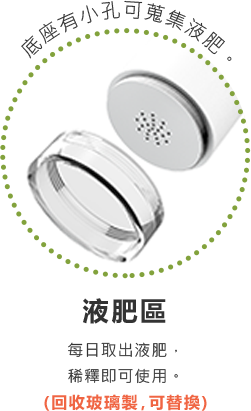

臺灣每年有多少家戶廚餘的浪費?
在臺灣，每年約有近 200 萬噸的家庭廚餘被浪費，若用化工桶堆疊來換算，高度相當於每日 74 座 101 大樓呢!
備註 : 其中約60%剩食是因民眾使用習慣，隨垃圾袋進焚化爐燒毀，而讓資源被浪費了，真的好可惜呀!
專利抑臭配方酵素
熟成期間無味道產生
專利機器防蟲設計
熟成期間無小蟲問題
專利手動攪碎設計
輕輕轉動可碎化剩食
金屬、玻璃材質及
積木式設計，方便清洗
桶身貼合手掌輕巧
便利好移動、好操作
全機材質可以回收
達到循環設計的概念


| 產品 | 外觀 | 尺寸 | 使用方式 | 環保 |
|---|---|---|---|---|
| RE Green居家製肥機 | 外觀打造設計質感 | 尺寸輕巧好拿取 | 免插電環保不耗能 | 材質回收零廢棄 |
| 一般家用廚餘機 | 外觀無特殊設計 | 體積大不利移動 | 插電使用很耗能 | 塑膠製造不易回收 |
| RE Green 居家製肥機 | 生成桶 | 抑臭酵素包 | |
|---|---|---|---|
| 特殊事蹟 | 專利得獎設計 | 專利得獎設計 | 專利天然酵素，可加速熟成及抑臭 |
| 尺寸 | 直徑 120 mm × 高 390 mm | 直徑 120 mm × 高 260 mm | 專利天然酵素，可加速熟成及抑臭 |
| 容量 | 2000 ml | 2000 ml | 800克 ± 5% |
| 產品形式 | 積木式設計 | 積木式設計 | 可持續使用一週7天 |
| 材質 | 金屬材質可全回收 | 金屬材質可全回收 | |
| 內容 | 附有安全攪碎裝置 通氣桶、通氣蓋 通氣管及液肥收集盒 |
附有通氣桶 通氣蓋 通氣管及液肥收集盒 |
「木屑包」: 調整濕度用(建議維持濕度60%) 「種子包」: 種子行發芽90%以上之種子 ex:空心菜 |
| 產地 | 臺灣 | 臺灣 | 臺灣 |
建議使用Chrome、Firefox、Safari最新版本瀏覽
全球先進SSL 256bit傳輸加密機制
Copyright © 2020 RE GREEN All right reserved.